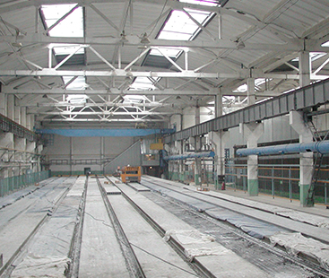
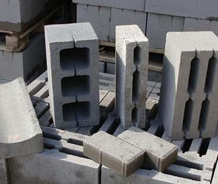

Крупнейшее предприятие в России по производству различных видов железобетона в Центрально-Черноземном регионе.
- г. Старый Оскол, Ст. Котел-10, площадка «Монтажная», строение 14
- E-mail: st-is@mail.ru
Крупнейшее предприятие в России по производству различных видов железобетона в Центрально-Черноземном регионе.
Наше производство оснащено современным оборудованием и технологиями передовых западных фирм.
Успешно внедрены и функционируют:
испанская линия «Тенсиланд», предназначенная для крупносерийного производства преднапряженных пустотных плит перекрытий идеальной геометрии, любых нагрузок и нестандартных типоразмеров длиной до 9 метров;
линия «Компакта-2000», предназначенная для промышленного производства мелкоштучных изделий из бетона (несущих, перегородочных и облицовочных стеновых блоков, тротуарной плитки, поребрика и бордюрного камня), а их применение обеспечивает выразительность возводимых зданий, эстетические возможности которых удовлетворяют современным архитектурным и градостроительным требованиям.
Новая испанская линия «Тенсиланд» пришла на смену агрегатно-поточной и другим традиционным технологиям, применяемым для изготовления комплектующих для строительного рынка. Линия предназначена для безопалубочного формования преднапряжённых железобетонных плит пустотного настила длиной до 12 метров (а при необходимости и до 18 метров), а также балок различного сечения и конфигурации. Изделия, произведенные по технологии безопалубочного формования преднапряжённых железобетонных плит, активно используются в многоэтажном, коттеджном и промышленном строительстве. Они изготавливаются из тяжелого бетона, марка назначается проектом в зависимости от условий эксплуатации плит. Плиты, выпускаемые в настоящее время комбинатом, рассчитаны на нагрузку 800 кг/кв.м. Однако во время произведенных недавно испытаний квадратный метр плиты выдержал нагрузку в 1,5 тонны, прогнувшись всего на 16 мм. Результаты испытаний убедительно свидетельствуют о том, что прочностные характеристики плит, производимых на линии «Тенсиланд», намного выше нормативных.
На технологической линии «Компакт-2000» выпускают вибропрессованные изделия более 20 наименований. Простота и совершенство, надежность и функциональность стеновых и дорожных изделий позволяют получать эффективные решения в архитектуре гражданского и жилищного строительства, малых архитектурных форм и благоустройстве территории. На технологической линии «Тенсиланд» выпускают пустотные плиты перекрытий безопалубочного формования и балки перекрытий, применяемые в строительстве и реконструкции зданий и сооружений. Плиты перекрытий изготавливают длиной до 9 м, шириной 1200 мм и высотой 220 мм под расчетные нагрузки от 300 до 1250 кг/м2 из бетона В 30 (М 400).